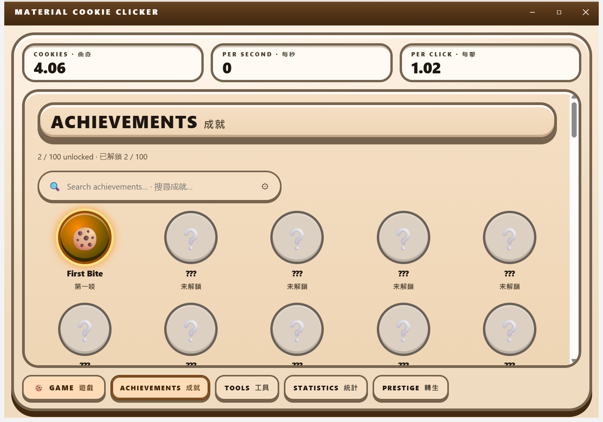

Achievements
One hundred achievements, generated from four milestone families, with a permanent unlock and a marquee toast.
Shipped the Achievements tab is in this release; 100 definitions in src/shared/game/achievements.ts.
From the running application

See all five captures in the capture matrix.
What it does
An achievement is a named milestone that unlocks permanently the first time its condition is met, and records the moment it was unlocked. There are 100 definitions, built from four families:
- 84 ownership milestones — 1, 10, 25, 50, 100 and 200 owned, for each of the fourteen generators.
- 7 lifetime-cookie milestones — from your first cookie up to a quadrillion.
- 4 click milestones — 100, 1,000, 10,000 and 100,000 clicks.
- 5 named and prestige milestones, including the ascension counts at 1, 5, 10 and 25.
Every achievement has both an English and a Cantonese name. Conditions are evaluated against game state, which means a milestone crossed by passive production counts exactly like one crossed by clicking — achievements are not checked only at purchase time.
How it is configured
The milestone thresholds are arrays at the top of one file, and the definitions are generated from them, so the count moves with the data instead of being hand-maintained. design/achievement-badge.html fixes the presentation: a locked silhouette, an unlocked struck medal with a domed face and a rotating conic metal rim, and a distinct unlock toast that is corner-anchored, auto-dismissing, and never a blocking dialog.
The properties that matter
Unlocks are permanent and survive prestige. An unlocked achievement never silently re-locks. Because there is no leaderboard, no server and no payment anywhere in this product, an edited save file granting every badge is not a security problem and is not treated as one.
In the shipped build
The Achievements tab shows all one hundred badges with a live unlocked count and a search field, locked ones as grey silhouettes. The unlock toast works — and can briefly overlay a shop row on the game surface, which is a known rough edge rather than a hidden one.